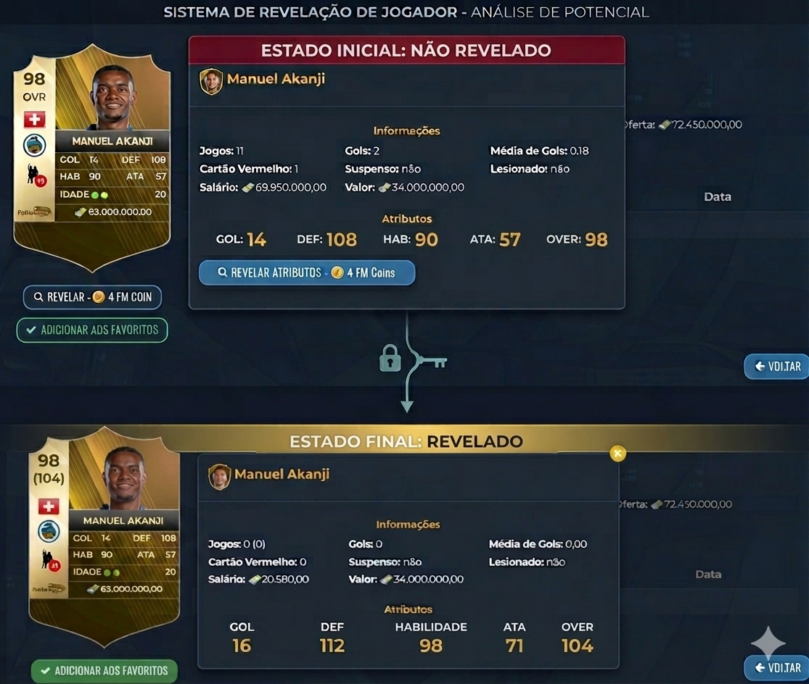

Neste tópico, serão apresentadas algumas estratégias para a identificação de jogadores, com o objetivo de formação e desenvolvimento dentro do sistema de progressão.
A partir dessas orientações, o gestor poderá selecionar atletas de acordo com suas necessidades específicas ou conforme o padrão previamente estabelecido, garantindo maior eficiência no processo de evolução e construção do elenco.
Categoria de base
A categoria de base representa um dos principais mecanismos para a formação de novos jogadores, sendo fundamental para o desenvolvimento estratégico do elenco. Por meio desse recurso, é possível gerar atletas com custos mais acessíveis, evitando investimentos excessivos no mercado. Além disso, a categoria de base permite maior controle sobre o processo de formação, possibilitando ao manager estruturar o elenco de acordo com suas necessidades e objetivos, de forma eficiente.
Caso a categoria esteja no nível máximo de evolução, será possível selecionar a posição desejada. A partir dessa definição, será iniciada a formação de um jogador de 18 anos, com overall variando dentro dos limites estabelecidos para cada tipo de carta e evolução da sua categoria de base. O processo possui duração de 72 horas e custo variável, conforme a categoria da carta selecionada: bronze (20 milhões de euros), prata (30 milhões de euros) e ouro (40 milhões de euros).
Por outro lado, caso a categoria ainda não esteja totalmente evoluída, não será possível escolher a posição do jogador. Nessa condição, a formação ocorrerá de maneira aleatória e não haverá a opção de gerar três jogadores simultaneamente.
Após o período de 72 horas, será necessário clicar no botão verde “Finalizar”. Em seguida, os jogadores formados serão automaticamente enviados para o elenco.

Revelar jogador
Conforme mencionado anteriormente, o overall (OVR) do jogador é definido com base em seus três atributos principais. Em cartas recém-formadas e/ou disponíveis no mercado, essas informações permanecem inicialmente como “privadas”. Dessa forma, torna-se necessário que o manager utilize 4 créditos para realizar a ação de revelação, permitindo a visualização completa dos atributos e do overall real da carta. Esse processo é essencial para uma avaliação precisa do jogador antes de qualquer tomada de decisão.
Conforme ilustrado na imagem acima, o sistema gera inicialmente um overall (OVR) aleatório, que vai estar abaixo do potencial máximo da carta. Para identificar o limite máximo do jogador, é necessário acessar a carta e utilizar a opção “Revelar atributos”. Ao realizar essa ação, será possível visualizar o potencial completo do atleta e compreender seu nível real de desempenho. Como exemplo prático, foi analisado um jogador ouro recém-formado com overall inicial de 89. Após a utilização de 4 créditos para realizar a revelação, constatou-se que o jogador possuía potencial elevado, atingindo um overall de 103, próximo ao limite máximo permitido para a carta na categoria de base (104). Dessa forma, o processo de revelação se mostra essencial para a avaliação precisa da qualidade dos jogadores gerados.
O ‘’revelar atributos’’ também é usado no leilão de jogadores para realizar compras com maior exatidão e também para fazer o calculo de quantos treinos será necessário dar na carta para que ela chegue no máximo, vamos pegar um exemplo prático, vamos supor que estou em busca de um novo jogador para formar visto que a categoria de base podemos formar apenas 3 jogadores a cada 72 horas, então se faz necessário a busca de jogadores no mercado para formação do time mais rápida o caminho seguido será:
Mercado da bola → leilão de jogadores
O processo de busca será realizado por meio da aplicação de filtros específicos, de acordo com a necessidade do manager.Neste caso, a configuração utilizada será a seguinte:
- Grupo: Ouro
- Idade máxima: 20 anos
Após a definição, vá em “Procurar”, iniciando assim a varredura de atletas disponíveis que atendam aos critérios estabelecidos.
Após a identificação de um jogador de interesse, o manager poderá utilizar a funcionalidade “Revelar Atributos” para obter o valor real do seu overall, bem como a distribuição completa de seus atributos.
Essa etapa exige o investimento de 4 créditos, sendo essencial para validar o potencial real da carta analisada.
Exemplo prático:
Durante a observação inicial, foi identificado um zagueiro com overall estimado de 98. Ao analisar seus três atributos principais — Defesa: 108, Habilidade: 90 e Ataque: 57 — o jogador demonstrava desempenho acima do esperado, sugerindo possível variação no seu valor real.
Diante disso, foi utilizada a opção “Revelar Atributos”, com o custo de 4 créditos. Após a confirmação, descobriu-se que o atleta se tratava, na realidade, de uma carta ouro com overall 104, apresentando os seguintes atributos reais:
- Defesa: 112
- Habilidade: 98
- Ataque: 71

⚠️É importante destacar que o uso da função “Revelar Atributos” deve ser feito com cautela. Caso não seja utilizada de forma estratégica, pode resultar em um alto consumo de moedas, comprometendo os recursos disponíveis. Portanto, recomenda-se que o manager realize uma análise prévia cuidadosa antes de ativar a função, garantindo que o investimento de créditos seja realmente necessário e vantajoso para a tomada de decisão.